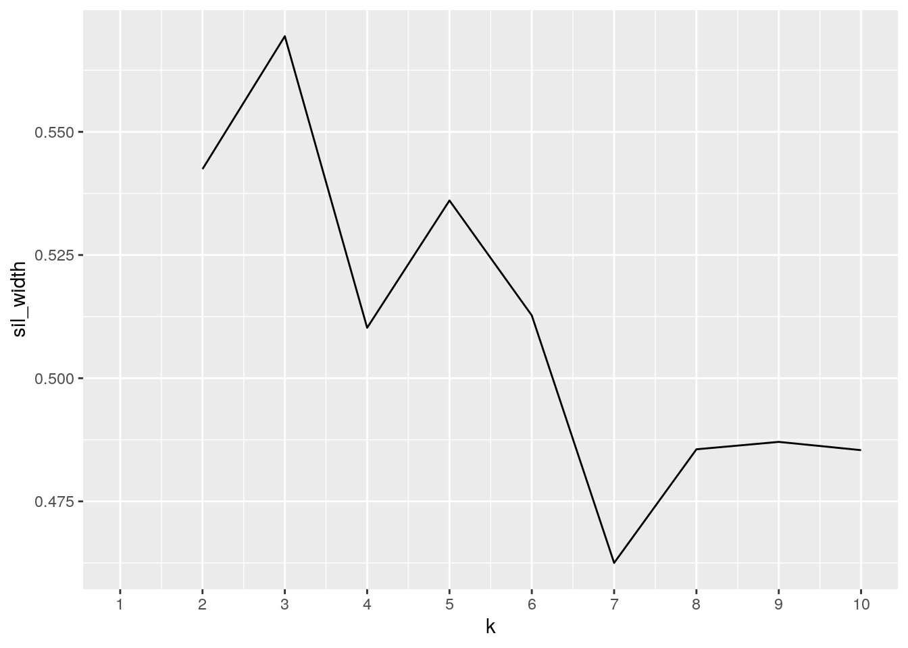

I used to be a very athletic person. I swam competitively when I was younger and was also on the track team in high school. When I went on to college I was disappointed when I was only able to workout a couple times a week. Then just as I had signed up for a marathon in attempt to reverse my idleness and try something new, quarantine hit.
After being stuck in the same room from March to September only going on walks around the neighborhood to get fresh air, I was super excited when I received an Apple Watch for my birthday. I have worn it every single day since receiving it, sometimes even while sleeping because I wanted to take advantage of all of its functions.
This project was the perfect excuse to analyze my Apple Watch data through a long term lens in conjunction with data pulled from a calorie tracking app I’ve use for years called MyFitnessPal.
My data spans October 2020 - March 2021. From Apple I am focusing on hours of exercise, hours of sleep, and resting heart rate. My dataset will also look at calories eaten and the corresponding meal category (Breakfast, Lunch, Dinner, or Snack) from MyFitnessPal.
The Apple Heath extraction gave me each variable I was interested in as its own dataset.
The exercise minutes and sleep hours datasets contained multiple measurements per day. In order to create one AppleWatch dataset, I had to use mutate, summarize, and group_by functions from dplyr to to find each day’s total sum of exercise and sleep.
# RAW EXERCISE DATA Every minute is recorded individually
Exercise.indiv <- read.csv("Exercise indiv.csv")
head(Exercise.indiv)## creationdate exercise
## 1 10/8/2020 8:10 1
## 2 10/8/2020 8:28 1
## 3 10/8/2020 8:40 1
## 4 10/8/2020 8:40 1
## 5 10/8/2020 8:41 1
## 6 10/8/2020 8:42 1library("dplyr")
# create a day column by separating date from the
# `creationdate` column group by day then sum exercise for
# day
daily_sum_ex <- Exercise.indiv %>% mutate(day = as.Date(creationdate,
format = "%m/%d/%Y")) %>% group_by(day) %>% summarise(total_ex = sum(exercise))
# Modified Exercise Data
head(daily_sum_ex)## # A tibble: 6 x 2
## day total_ex
## <date> <int>
## 1 2020-10-08 50
## 2 2020-10-09 82
## 3 2020-10-10 50
## 4 2020-10-11 62
## 5 2020-10-12 9
## 6 2020-10-13 9# RAW SLEEP DATA Moments I woke up in the middle of the night
# created multiple measurements per sleep session
Sleep <- read.csv("~/ComputationalBio/Sleep data.csv")
head(Sleep)## startdate enddate
## 1 10/1/2020 0:00 10/1/2020 7:00
## 2 10/2/2020 0:00 10/2/2020 7:00
## 3 10/3/2020 0:00 10/3/2020 7:30
## 4 10/4/2020 1:00 10/4/2020 7:30
## 5 10/5/2020 0:00 10/5/2020 7:00
## 6 10/6/2020 0:00 10/6/2020 7:30# Separate the start time and end time from the date
start_hour <- format(as.POSIXct(strptime(Sleep$startdate, "%m/%d/%Y %H:%M",
tz = "")), format = "%H:%M")
end_hour <- format(as.POSIXct(strptime(Sleep$enddate, "%m/%d/%Y %H:%M",
tz = "")), format = "%H:%M")
# add those time columns to dataset
Sleep$starttime <- start_hour
Sleep$endtime <- end_hour
# calculate hours slept between end_hour and start_hour for
# each entry
Sleep$diff <- difftime(as.POSIXct(Sleep$enddate, "%m/%d/%Y %H:%M",
tz = ""), as.POSIXct(Sleep$startdate, "%m/%d/%Y %H:%M", tz = ""),
units = "hours")
# Group by day and total the hours slept per night
daily_sum_sl <- Sleep %>% mutate(day = as.Date(startdate, format = "%m/%d/%Y")) %>%
group_by(day) %>% summarise(total_sleep = sum(diff)) %>%
na.omit()
# Modified Sleep Data
head(daily_sum_sl)## # A tibble: 6 x 2
## day total_sleep
## <date> <drtn>
## 1 2020-10-01 7.0 hours
## 2 2020-10-02 7.0 hours
## 3 2020-10-03 7.5 hours
## 4 2020-10-04 6.5 hours
## 5 2020-10-05 7.0 hours
## 6 2020-10-06 7.5 hoursIn Resting Heart Rate to have a common ID variable I had to use mutate and select in order to separate the date from the time and create a new modified dataset. There were also some double measurements per day in this dataset, so I chose for the minimum measurement per day.
# RAW HEART DATA gives resting heart rate (bpm) for each day
# watch is worn
Heart <- read.csv("~/ComputationalBio/Resting Heart.csv")
head(Heart)## creationdate bpm_resting
## 1 10/9/2020 18:56 59
## 2 10/10/2020 20:23 64
## 3 10/11/2020 7:45 59
## 4 10/11/2020 19:11 57
## 5 10/12/2020 20:09 57
## 6 10/13/2020 22:01 58# separate date form `creationdate` to form CommonID
Heart <- Heart %>% mutate(day = as.Date(creationdate, format = "%m/%d/%Y"))
# remove `creationdate` column in new dataset and min measure
# per day
rest_heart <- Heart %>% select(day, bpm_resting) %>% group_by(day) %>%
summarise(bpm_resting = min(bpm_resting))
# Modified Resting Heart Rate Data
head(rest_heart)## # A tibble: 6 x 2
## day bpm_resting
## <date> <int>
## 1 2020-10-09 59
## 2 2020-10-10 64
## 3 2020-10-11 57
## 4 2020-10-12 57
## 5 2020-10-13 58
## 6 2020-10-14 57I have used MyFitneessPal on and off since 2018. Using filter I selected for dates within the time range 10/9/2020 - 3/31/2021. I chose 10/9 as the start date because the Apple Exercise and Resting Heart Rate datasets also started then. I also utilized arrange to order the calories consumed in descending order while still keeping the dates in calender order.
# RAW CALORIE DATA This dataset includes, date and time of
# log, calories and meal category
DietaryEnergyConsumed <- read.csv("~/ComputationalBio/DietaryEnergyConsumed.csv")
head(DietaryEnergyConsumed)## unit date value Meal
## 1 Cal 12/28/2018 12:28 255.087 Breakfast
## 2 Cal 12/28/2018 14:37 387.574 Lunch
## 3 Cal 12/28/2018 16:06 45.649 Snacks
## 4 Cal 12/28/2018 22:28 0.000 Dinner
## 5 Cal 12/30/2018 21:46 156.774 Lunch
## 6 Cal 12/30/2018 21:47 195.174 Breakfast# separate date from log time
DietaryEnergyConsumed <- DietaryEnergyConsumed %>% mutate(day = as.Date(date,
format = "%m/%d/%Y"))
# filter for 10/9/2020- 3/31/2021 and remove date+time and
# unit columns
MyFitPal <- DietaryEnergyConsumed %>% filter(day >= as.Date("2020-10-09") &
day <= as.Date("2021-03-31")) %>% select(day, value, Meal)
# rename value to cal
names(MyFitPal)[2] <- "calories"
# arrange by descending calories, keep calender
MyFitPal <- MyFitPal %>% arrange(day, desc(calories))
# Modified Calorie Data
head(MyFitPal)## day calories Meal
## 1 2020-10-12 293.250 Breakfast
## 2 2020-10-12 176.666 Dinner
## 3 2020-10-12 130.000 Lunch
## 4 2020-10-12 80.000 Snacks
## 5 2020-10-14 100.000 Breakfast
## 6 2020-10-16 920.000 DinnerIn order to join all 4 datasets, I chose to group the 3 from my Apple Watch first, then join agian to the MyFitnessPal dataset.
For daliy_sum_ex, daily_sum_sl, and rest_heart I chose a full join by day. The full join allowed me to keep all of the observations from each dataset, placing a N/A where observations were missing for a date in a certain variable. The resulting AppleWatch dataset has 182 days where at least one of the three variables are measured.
# observations in each dataset
nrow(daily_sum_ex) # min. exercise per day## [1] 172nrow(daily_sum_sl) # hours of sleep per night## [1] 177nrow(rest_heart) # resting heart rate (bpm)## [1] 148nrow(MyFitPal) # entries for all Meal types## [1] 247# Apple data - full join
Exercise_sleep <- full_join(daily_sum_ex, daily_sum_sl, by = "day")
AppleWatch <- full_join(Exercise_sleep, rest_heart, by = "day")
head(AppleWatch)## # A tibble: 6 x 4
## day total_ex total_sleep bpm_resting
## <date> <int> <drtn> <int>
## 1 2020-10-08 50 7.000000 hours NA
## 2 2020-10-09 82 8.500000 hours 59
## 3 2020-10-10 50 8.500000 hours 64
## 4 2020-10-11 62 7.366667 hours 57
## 5 2020-10-12 9 8.266667 hours 57
## 6 2020-10-13 9 7.900000 hours 58n_distinct(AppleWatch$day)## [1] 182For my final dataset, I had to join AppleWatch to MyFitPal. In order to omit days where MyFitnessPal data was not logged, I used a right join. The right join kept my descending calorie order, and modified the Apple Watch data to a multiple measure per day format. This resulted in a dataset spanning 80 distinct days, with 79 exercise, 80 sleep, and 69 resting heart rate measurements as well as 284 total calorie logs and their corresponding meal type.
# Big Dataset - right join - drop days that have AppleWatch
# but no MyFitPal
Project1 <- right_join(AppleWatch, MyFitPal, by = "day")
# transform to double
Project1$total_sleep <- as.double(Project1$total_sleep)
head(Project1)## # A tibble: 6 x 6
## day total_ex total_sleep bpm_resting calories Meal
## <date> <int> <dbl> <int> <dbl> <fct>
## 1 2020-10-12 9 8.27 57 293. Breakfast
## 2 2020-10-12 9 8.27 57 177. Dinner
## 3 2020-10-12 9 8.27 57 130 Lunch
## 4 2020-10-12 9 8.27 57 80 Snacks
## 5 2020-10-14 52 6.4 57 100 Breakfast
## 6 2020-10-16 57 8.32 60 920 Dinnern_distinct(Project1$day)## [1] 80# total measurements of each variable in Project1 dataset
total_ex_measure <- Project1 %>% group_by(day) %>% summarize(total_ex = mean(total_ex)) %>%
na.omit()
nrow(total_ex_measure)## [1] 79total_sl_measure <- Project1 %>% group_by(day) %>% summarize(total_sleep = mean(total_sleep)) %>%
na.omit()
nrow(total_sl_measure)## [1] 80total_bpm_measure <- Project1 %>% group_by(day) %>% summarize(bpm_resting = mean(bpm_resting)) %>%
na.omit()
nrow(total_bpm_measure)## [1] 69# calorie logs same as nrow Project1
nrow(Project1)## [1] 247To look at statistical summaries for each variable in Project1 I had to using the dplyr functions to find mean, sd, min, max, median, IQR, and distinct number of measurements.
First I coded the overall statistics. My average exercise time was 55min, the average amount of sleep I got in a night was 6.498 hours, and my average resting heart rate for the last 6 months is 59 bpm. These variables on their own had little deviation, and I realized in the future I should keep up with my calorie tracking since the standard deviation ~400 cal for an average 1,014 cal/day, since for each day there is nott a calorie log for each meal type.
Looking at categorical data, I grouped by mealand also created a new sleep_quality categorical variable based off my total sleep. I found out that I was most variable at Dinner with the highest IQR of ~299cal, and that my Snack calories is pretty similar to my Breakfast. Looking at my sleep quality, I saw that I eat more when I sleep more than 7 hours a night, which surprised me because I know I drink more coffee on bad days and I thought those would really increase my calorie intake.
## OVERALL
# exercise data
summary_ex <- Project1 %>% group_by(day) %>% summarize(total_ex = mean(total_ex)) %>%
na.omit()
summary_ex <- summary_ex %>% summarize(mean = mean(total_ex),
sd = sd(total_ex), median = median(total_ex), min = min(total_ex),
max = max(total_ex), IQR = IQR(total_ex), distinct_n = n_distinct(total_ex))
# sleep data
summary_sl <- Project1 %>% group_by(day) %>% summarize(total_sleep = mean(total_sleep)) %>%
na.omit()
summary_sl <- summary_sl %>% summarize(mean = mean(total_sleep),
sd = sd(total_sleep), median = median(total_sleep), min = min(total_sleep),
max = max(total_sleep), IQR = IQR(total_sleep), distinct_n = n_distinct(total_sleep))
# resting heart rate data
summary_bpm <- Project1 %>% group_by(day) %>% summarize(resting = mean(bpm_resting)) %>%
na.omit()
summary_bpm <- summary_bpm %>% summarize(mean = mean(resting),
sd = sd(resting), median = median(resting), min = min(resting),
max = max(resting), IQR = IQR(resting), distinct_n = n_distinct(resting))
# calories data
total_cal_day <- Project1 %>% group_by(day) %>% summarize(total_cal = sum(calories))
summary_cal <- total_cal_day %>% summarize(mean = mean(total_cal),
sd = sd(total_cal), median = median(total_cal), min = min(total_cal),
max = max(total_cal), IQR = IQR(total_cal), distinct_n = n_distinct(total_cal))
### Join all summary of numeric stats
sum1 <- full_join(summary_ex, summary_sl)
sum2 <- full_join(sum1, summary_bpm)
Overall_Summary <- full_join(sum2, summary_cal)
# Summary of all numerical data
Overall_Summary## # A tibble: 4 x 7
## mean sd median min max IQR distinct_n
## <dbl> <dbl> <dbl> <dbl> <dbl> <dbl> <int>
## 1 55.1 32.6 59 3 144 47.5 56
## 2 6.50 2.26 6.37 0.2 17.2 2.00 76
## 3 59 3.71 59 50 67 4 16
## 4 1014. 426. 1057. 100 2038. 630. 78# Group By Meal Category
cal_by_meal <- Project1 %>% arrange(Meal) %>% group_by(Meal)
# summary
Categorical_Summary <- cal_by_meal %>% summarize(mean = mean(calories),
sd = sd(calories), median = median(calories), min = min(calories),
max = max(calories), IQR = IQR(calories), distinct_n = n_distinct(calories))
# Summary of calories eaten by meal type
Categorical_Summary## # A tibble: 4 x 8
## Meal mean sd median min max IQR distinct_n
## <fct> <dbl> <dbl> <dbl> <dbl> <dbl> <dbl> <int>
## 1 Breakfast 263. 153. 272. 42.4 642. 272. 47
## 2 Dinner 497. 257. 475 139 1335 299 53
## 3 Lunch 317. 161. 300 40.5 846 197 63
## 4 Snacks 239. 135. 206 50.0 503. 207. 42# Mutate to create new variable that is a function of another
# If sleep greater than 7hrs, sleep is good If sleep less
# than, sleep was bad
sleep_pattern <- Project1 %>% group_by(day) %>% summarize(total_ex = mean(total_ex),
total_sleep = mean(total_sleep), bpm_resting = mean(bpm_resting),
calorie_sum = sum(calories))
sleep_pattern <- sleep_pattern %>% mutate(sleep_quality = ifelse(total_sleep >
7, "good", "bad"))
# Group By Sleep Quality Categorical
var_by_sleepqual <- sleep_pattern %>% group_by(sleep_quality)
# summary
SleepQuality_Summary <- var_by_sleepqual %>% summarize(mean = mean(calorie_sum),
sd = sd(calorie_sum), median = median(calorie_sum), min = min(calorie_sum),
max = max(calorie_sum), IQR = IQR(calorie_sum), distinct_n = n_distinct(calorie_sum))
# Summary of calories eaten by sleep quality
SleepQuality_Summary## # A tibble: 2 x 8
## sleep_quality mean sd median min max IQR distinct_n
## <chr> <dbl> <dbl> <dbl> <dbl> <dbl> <dbl> <int>
## 1 bad 999. 421. 1073. 100 2038. 581. 46
## 2 good 1037. 440. 1050. 123. 1935 619. 32To demonstrate the use of pivot_longer()/gather() and pivot_wider()/spread() I decided to make my categorical summary datasets longer by Meal and sleep_quality.
library(tidyr)
# Longer summary stats for calories eaten by meal
longer_CatSum <- pivot_longer(Categorical_Summary, !Meal)
head(longer_CatSum)## # A tibble: 6 x 3
## Meal name value
## <fct> <chr> <dbl>
## 1 Breakfast mean 263.
## 2 Breakfast sd 153.
## 3 Breakfast median 272.
## 4 Breakfast min 42.4
## 5 Breakfast max 642.
## 6 Breakfast IQR 272.# Longer summary stats for calories eaten by sleep quality
longer_sq <- pivot_longer(SleepQuality_Summary, !sleep_quality)
head(longer_sq)## # A tibble: 6 x 3
## sleep_quality name value
## <chr> <chr> <dbl>
## 1 bad mean 999.
## 2 bad sd 421.
## 3 bad median 1073.
## 4 bad min 100
## 5 bad max 2038.
## 6 bad IQR 581.# numeric variables
numeric_var <- Project1 %>% group_by(day) %>% summarise(ex = mean(total_ex),
sleep = mean(total_sleep), bpm = mean(bpm_resting), cal = sum(calories)) %>%
select(ex, sleep, bpm, cal) %>% na.omit()
# correlation
cor_numvar <- round(cor(numeric_var), 2)
# melt
library(reshape2)
melt_cor_numvar <- melt(cor_numvar)
# heatmap with color
library(ggplot2)
ggplot(data = melt_cor_numvar, aes(x = Var1, y = Var2, fill = value)) +
geom_tile() + scale_fill_gradient2(high = "red", mid = "purple",
name = "Pearson Coorelation") + labs(title = "Heat Map of Pearsons Coorelation")The Pearson Correlation Coefficient (R) is a measure of linear strength between 2 variables in a linear relationship. Looking at this heat map between my total exercise, total sleep, resting heart rate, and total calorie data you can see that all variables are positively correlated to different degrees since the R value is greater than 0 for the entire heat map. Total exercise paired with total calories burned has the strongest relationship, being a magenta color in the 0.25<R<0.5 range. The next strongest relationship is between exercise and sleep because the color is more purple indicating it falls into the R<0.25 range.
library(ggpubr)
# plot realationship between total sleep, restin heart rate,
# and calories
plt1 <- ggplot(Project1, aes(total_ex, total_sleep)) + geom_point(color = "pink") +
geom_smooth(color = "red") + labs(title = "Total Exercise vs..") +
xlab(" ") + ylab("Total Sleep (hrs)")
plt2 <- ggplot(Project1, aes(total_ex, bpm_resting)) + geom_point(color = "blue") +
geom_smooth(color = "dark blue") + xlab(" ") + ylab("Resting Heart Rate (bpm)")
plt3 <- ggplot(Project1, aes(total_ex, calories)) + geom_point(color = "green") +
geom_smooth(color = "dark green") + xlab("Total Exercise (min)") +
ylab("Total Calories")
# group and display
figure1 <- ggarrange(plt1, plt2, plt3, ncol = 1, nrow = 3)
figure1
To further explore the relationship that daily exercise has on my data, I used geom_smooth() to analyze my total sleep, resting heart rate, and total calories for the day. As default the shaded region represents a 95% confidence interval. The region flares out mainly at the upper extremes since there are less measurements for all variables.
# plot sleep quality against mean bpm, mean calories, and
# mean exercise
p1 <- ggplot(data = var_by_sleepqual, aes(x = sleep_quality,
y = bpm_resting)) + geom_bar(stat = "summary", color = "black",
fill = c("red", "purple")) + scale_y_continuous(breaks = seq(0,
60, 10)) + ylab("Mean Resting Heart Rate (bpm)") + xlab("Sleep Quality")
p2 <- ggplot(data = var_by_sleepqual, aes(x = sleep_quality,
y = calorie_sum)) + geom_bar(stat = "summary", color = "black",
fill = c("red", "purple")) + scale_y_continuous(breaks = seq(0,
1100, 50)) + ylab("Mean Calories") + xlab("Sleep Quality")
p3 <- ggplot(data = var_by_sleepqual, aes(x = sleep_quality,
y = total_ex)) + geom_bar(stat = "summary", color = "black",
fill = c("red", "purple")) + scale_y_continuous(breaks = seq(0,
70, 2)) + ylab("Mean Exercise (min)") + xlab("Sleep Quality")
# group and display with title
figure2 <- ggarrange(p1, p2, p3, ncol = 3, nrow = 1)
annotate_figure(figure2, top = text_grob("Analyzing Sleep Qualtiy Effect"))Finally, to look at the effect of a categorical variable I analyzed my created Sleep Quality variable from the Wrangling Summary Statistics section. The greatest difference was in mean exercise time. I was expecting this since in the Heat Map the greatest relationships were with exercise, but I didn’t expect it to be such a difference. Adjusting the y ticks I can clearly see that in the last 6 months if I got good night of sleep (>7hrs) I averaged an hour of exercise. If I had a bad night though (<7hrs) I dropped to an average 52 minutes.
In this step I perform PAM clustering on total_exercise, total_sleep, and bpm_resting.
To start I had to cluster my data a determine the ideal number of clusters for my PAM analysis.
library(cluster)
# cluster data
clust_dat <- Project1 %>% select(total_ex, total_sleep, bpm_resting) %>%
na.omit()
# find ideal number of clusters using silhouette
# empty vector to hold mean sil width
sil_width <- vector()
for (i in 2:10) {
kms <- kmeans(clust_dat, centers = i) #compute k-means solution
sil <- silhouette(kms$cluster, dist(clust_dat)) #get sil widths
sil_width[i] <- mean(sil[, 3]) #take averages (higher is better)
}
ggplot() + geom_line(aes(x = 1:10, y = sil_width)) + scale_x_continuous(name = "k",
breaks = 1:10)
To determine the ideal number of clusters I used the silhouette method in order to analyze how cohesive and separated clusters are. Based off the graph, 3 clusters is ideal for my data since the highest value for sil_width is at k=3. This means the clusters are the most cohesive and most separated they can be for my data.
Next, I started my PAM analysis.
# PAM
pam1 <- clust_dat %>% pam(k = 3)
# save the cluster solution to dataset
pamclust <- clust_dat %>% mutate(cluster = as.factor(pam1$clustering))
# visualize
pamclust %>% ggplot(aes(total_ex, total_sleep, bpm_resting, calories,
color = cluster)) + geom_point() + labs(title = "PAM Results for 3 Clusters") +
ylab("Component 2") + xlab("Component 1")# find middle-most observation for each cluster
pamclust %>% group_by(cluster) %>% summarize_if(is.numeric, mean,
na.rm = T)## # A tibble: 3 x 4
## cluster total_ex total_sleep bpm_resting
## <fct> <dbl> <dbl> <dbl>
## 1 1 16.6 5.86 59.1
## 2 2 59.4 6.84 58.7
## 3 3 100. 6.85 59.6This dataset shows the middle most observation (aka. medoid) in each cluster.